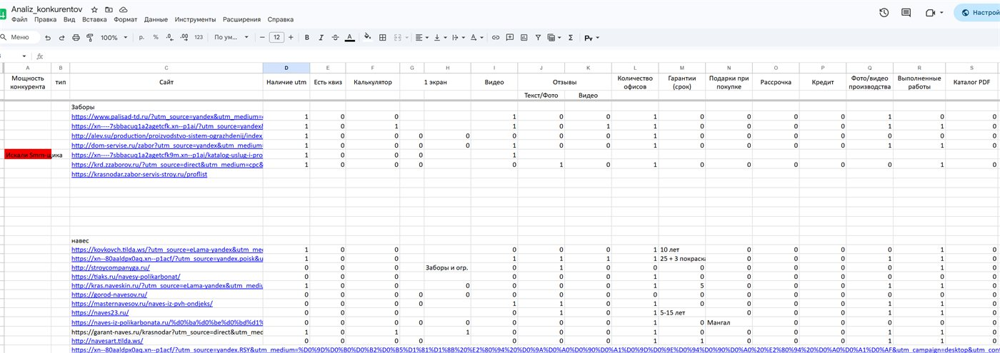
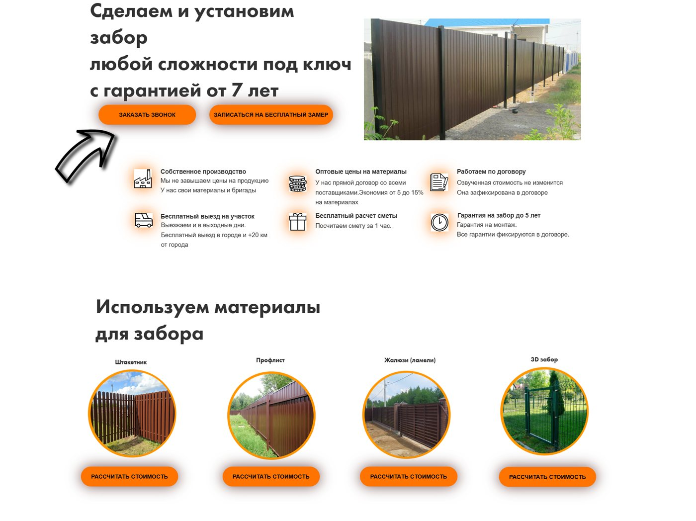
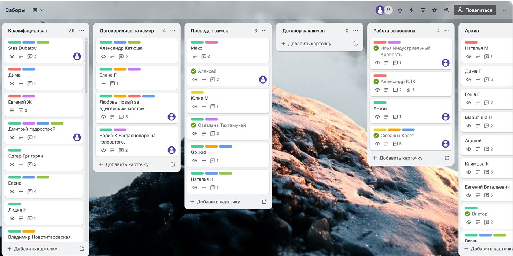

У клиента уже был отлаженный поток заявок из Instagram*: рабочий лендинг с конверсией 5%, около 87 заявок в месяц по цене ~350 ₽, и сильный отдел продаж — 2 из 3 заявок закрывались в договор. А потом Instagram* заблокировали в России — и основной канал привлечения обнулился за неделю.
Задача к нам была конкретная: перенести результат на доступные в РФ площадки — Яндекс и VK — и не потерять ни в цене заявки, ни в объёме. Рабочий лендинг и сильные продажи у клиента уже были, нужно было заново построить трафик. Итог за 3 месяца — поток вырос с 87 до ~275 заявок в месяц при сохранённой цене заявки ~505 ₽.
Шаг 1. Анализ конкурентов: разобрали 28 компаний Краснодарского края
Перед запуском изучили рынок. Собрали 28 прямых конкурентов и свели в таблицу.
| Параметр | Что смотрели |
|---|---|
| Оффер | Что обещают на первом экране (цена за м.п., сроки, гарантия) |
| Приманка | «Бесплатный замер», «монтаж в подарок», скидка на материал |
| Посадочная | Лендинг / квиз / каталог |
| Финансы | Рассрочка, оплата после установки |
| Скорость ответа | За сколько перезванивают после заявки |
| Скрипт продаж | Как считают смету, как дожимают, что спрашивают |
Прозвонили всех 28 под видом клиента. Выяснили:
- Большинство называет цену «от» за метр, но не считает смету по участку — клиент не понимает итог и уходит.
- Сильные игроки сразу предлагают бесплатный замер с выездом и точной сметой — это снимает страх скрытой доплаты.
- Почти никто не показывает сам процесс работы — а живое доказательство, что бригада реально варит и ставит заборы, вызывает больше доверия, чем любые обещания.

Шаг 2. Креативы: победило видео с рабочими
Под РСЯ и VK протестировали 4 креатива. Три статичных под разные смыслы — и один видеокреатив, где реальная бригада варит секции и ставит забор на участке.
| Креатив | CTR в РСЯ | Конверсия |
|---|---|---|
| Статика «от 1 200 ₽/м.п.» | 0,61% | 4,3% |
| Статика «забор за 1 день» | 0,78% | 5,9% |
| Видео с рабочими (процесс) | 1,15% | 7,8% |
| Статика «бесплатный замер» | 0,70% | 5,2% |
Видео выиграло с заметным отрывом. Люди видят, что забор реально варят живые мастера, а не перепродают — это снимает главное возражение «не кинут ли меня». Видеокреатив стал основным и в РСЯ, и в VK.
Шаг 3. Посадочная: оставили рабочий лендинг
Лендинг клиента уже давал 5% конверсии на трафике из Instagram* — это сильный показатель, и ломать рабочее мы не стали. Перенесли его на новый трафик и усилили оффером с анализа конкурентов (точная смета на замере + сроки + рассрочка).
Лендинг подтвердил себя и на платном трафике РСЯ и VK — стабильные 5% конверсии в заявку, без просадки после смены источника. Поэтому квиз и прочие эксперименты с посадочной не понадобились: рабочий инструмент уже был.

Шаг 4. Заявки в Telegram + Trello как бесплатная CRM
Чтобы клиент не терял заявки и видел всю воронку, настроили связку без затрат на платную CRM: заявка с лендинга моментально падает в Telegram-бот отдела продаж, и одновременно автоматически создаёт карточку в Trello — на доске, которую мы превратили в простую бесплатную CRM.
| Колонка Trello | Что значит |
|---|---|
| Новая заявка | Лид только пришёл, ждёт первого звонка |
| Замер назначен | Договорились о выезде замерщика |
| Смета отправлена | Клиент получил расчёт, идёт дожим |
| Договор | Согласовали и подписали |
| Монтаж | Бригада на объекте |
| Готово | Сдано, можно просить отзыв |
Теперь ни одна заявка не теряется, а руководитель видит, где «застревают» сделки. Всё на бесплатном тарифе Trello — нулевые затраты на CRM.

Результат по каналам за 3 месяца
| Канал | CTR | Стоимость заявки | Заявок |
|---|---|---|---|
| Яндекс РСЯ (лендинг) | 1,15% | 480 ₽ | ~560 |
| VK Реклама (лендинг) | 0,68% | 560 ₽ | ~270 |
| Итого | — | средняя ~505 ₽ | более 800 |
Стало (РСЯ + VK): ~275 заявок в месяц по той же цене ~505 ₽ — поток вырос в 3 раза, цена заявки удержана. Отдел продаж по-прежнему закрывает 2 из 3 заявок в договор (~67%).
Бонус: контент, который принёс бесплатные заявки
Отдельно мы порекомендовали заказчику снимать и выкладывать сам процесс производства заборов — то же, что выстрелило в рекламе. Клиент начал выкладывать процессы и стал получать от 5 заказов в месяц бесплатно, без рекламного бюджета.
- Видео производства и монтажа — как варят секции, как ставят забор за 1 день (таймлапс).
- «Было → стало» по участкам — короткие ролики для VK-клипов.
- Сравнение типов заборов — профнастил vs евроштакетник vs 3D-сетка.
- Видеоотзывы — VK-сообщество и Telegram-канал, перелить подписчиков с заблокированной площадки.
*Instagram принадлежит компании Meta, признанной экстремистской организацией и запрещённой на территории РФ.